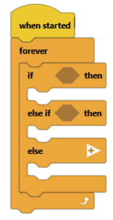
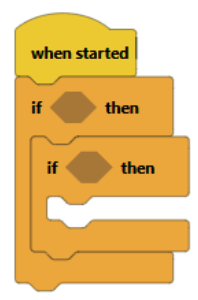
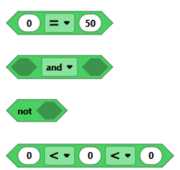

Lesson 7: Conditional Statements
Lesson Objectives
- Learn how to use conditional statements & how they work.
- How to utilize conditional statements in a robotics environment.
Materials Needed
- Computers (1 per group)
- Basebots, Distance sensor, and optical sensor.
- VexCode IQ Website
- Notebooks for each student
Lesson Procedure
1. Overview
- This lesson is to help students understand the importance of conditional statements and when they should be used.
- Also dive into nested conditionals and how to utilize them using different sensors.
2. Getting Started
- Have students make their own if … then … statements without code at first.
- Then, proceed with a group activity. Have them discuss two questions and write down their answers in their notebooks in pseudocode.
- Question 1: How would you get a robot to clean a room using an if… then… format?
Looking for: an answer that uses a clear, step-by-step process in which this “robot” has a single simple condition, which, when repeated, will result in the room being clean. - Question 2: Make another robot with multiple if, then statements.
Looking for: For the multiple if’s question, we are looking for answers that have more specific and simpler if conditions. - Learning ability: We want students to break down complex problems into manageable if conditionals.
3. Monitoring Progress
- Have students open codeiq.vex.com.
- Have the students watch this video, and follow along.
- Ask: Why do you think that the “Forever” block mentioned in the video was necessary? When would you use the “Forever, If… Then…” in a robotics environment?
- Elaborate more on the “Forever” block mentioned in the video, and why it is necessary for it to be there, instead of just one if condition.
- Then, explain to them what “elseIf” means, and connect it back to what they wrote on their notebooks at the beginning of class. Then, show them how they can use an else if statement in block code.
- It must be after an if block or another elseIf block
- Discussion question: What’s the difference between using elseIf and just using if again for the next block?
Answer: The else if block will not run if one of the previous blocks ran, but the next block will run when using if.

- Introduce the students to the “Math” Section
- The number comparisons should be pretty self-explanatory.
- The “not” block gives the opposite value of the boolean given (true → false, false → true)
- The “and” block will give true only if both booleans are true, and the “or” block only needs at least one of them to be true in order to return true
- Don’t worry about all the other blocks.
- Stress that these blocks return boolean values (true or false).
- Lastly, explain the concept of nested if statements, using the Math operators to compare values and print something out in the console.
- The inside if statement will only be tested if the first if statement is true.

- Then, introduce a challenge for the students to do using the distance sensor and bumper switch, using what they learned about nested if statements, math comparisons, and sensors.
- Challenge: Create your own “parking sensor” where if the distance sensor detects something closer than 30 mm, it prints out “Warning! Too close!” to the console and if the bumper switch is activated, it prints out “You’ve crashed!” to the console.

4. Wrapping Up
- Allow them to tweak different values in the conditional statements, such as the distance threshold for the warning message.
- If there is enough time, allow them to use different sensors and combine information to print out different things in the console.
Assessment
- Students should know how to use Math operators, both normal and nested if statements, else if statements, as well as the “else” statement.
Preparation for next class
- The next class will introduce one of the most important concepts in programming, loops.